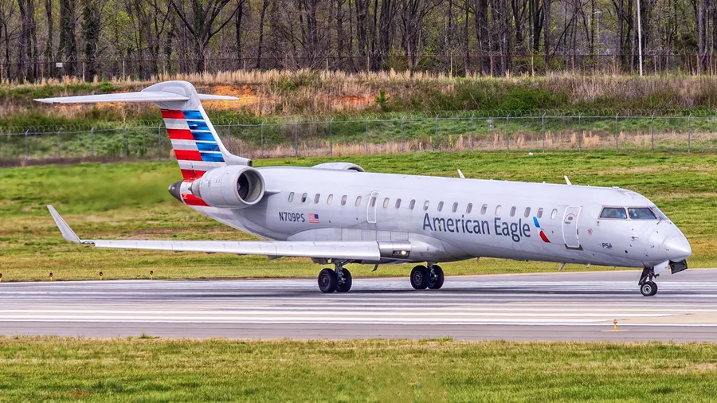
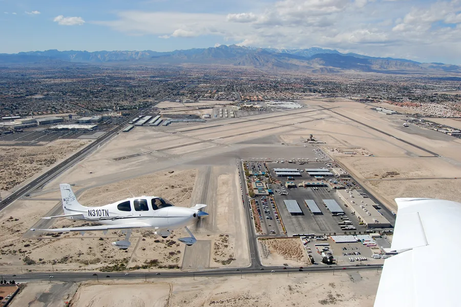
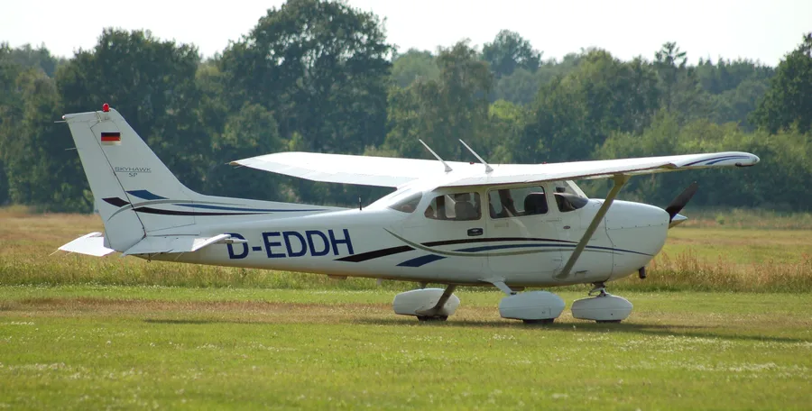
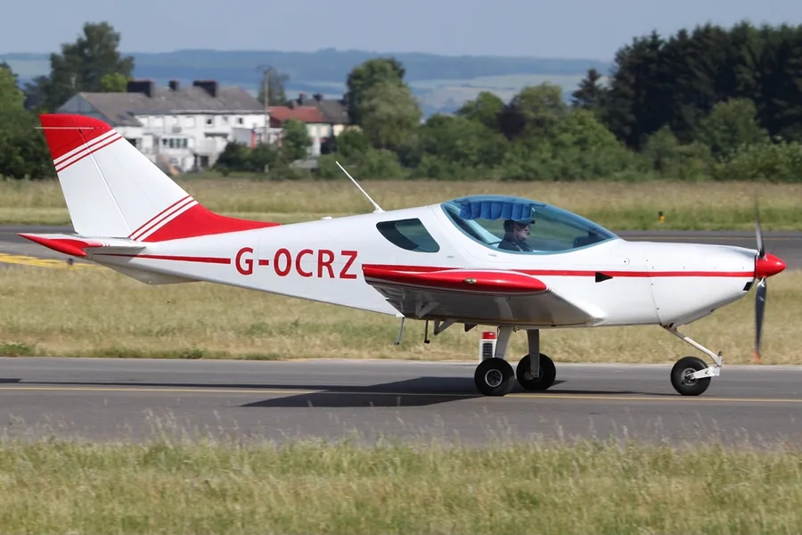
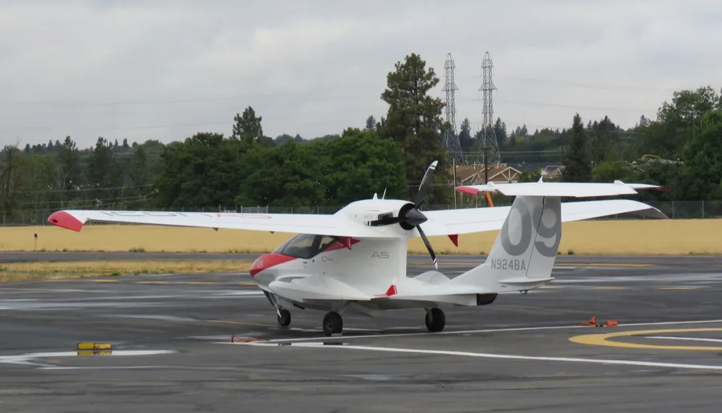
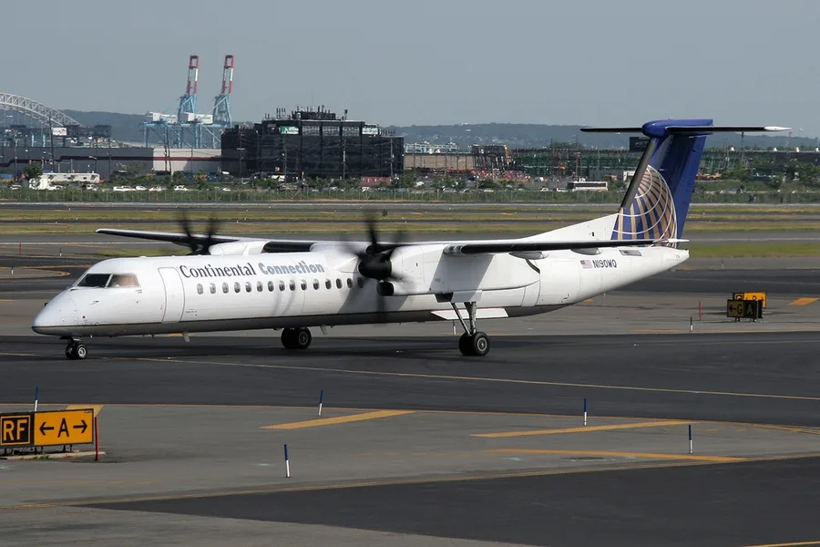
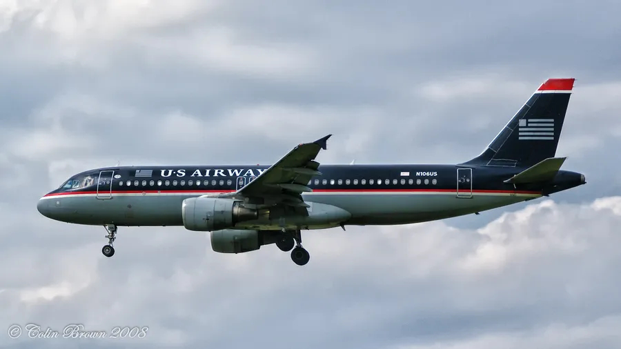
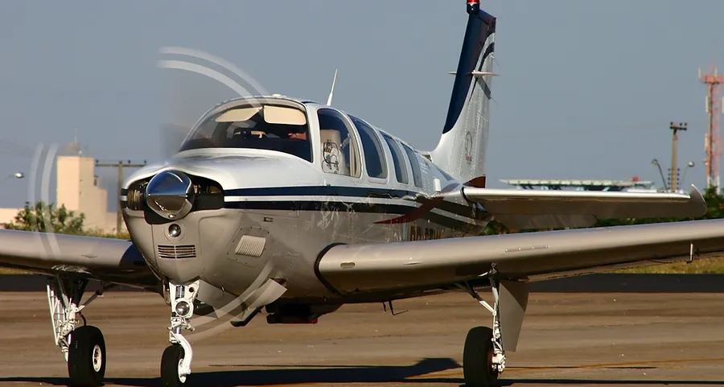

236,000+US aviation accidents (1962 – present)
1,200+Accidents in 2024–2025
25,000+Fatalities
Official dataFrom the National Transportation Safety Board
Latest aviation incidents
View all accidents →DateAircraftLocationInjuriesPhaseSummary

Jan 29, 2025Bombardier CRJ700 (N709PS)Washington, DC
›
Bombardier CRJ700N709PS
Washington, DC
Final approach
Midair collision with a military helicopter on final approach to DCA.
›

Mar 8, 2024Cirrus SR22 (N2824M)Whitethorn, CA
›
Mar 8, 2024
Cirrus SR22N2824M
Whitethorn, CA
Initial climb
Engine lost power from water-contaminated fuel; pilot deployed the parachute.
›
Nov 14, 2023Piper PA-28-180 (N7806W)Micanopy, FL
›
Piper PA-28-180N7806W
Micanopy, FL
En route
Continued VFR flight into IMC; pilot reported instrument failure and crashed.
›

Aug 3, 2023Cessna 172S Skyhawk (N860TW)Philadelphia, PA
›
Aug 3, 2023
Cessna 172S SkyhawkN860TW
Philadelphia, PA
Go-around
Bounced landing led to a go-around; airplane nosed over beside the runway.
›

Sep 8, 2022PiperSport (CZAW SportCruiser) (N126WK)Santa Monica, CA
›
PiperSport (CZAW SportCruiser)N126WK
Santa Monica, CA
Go-around
Abrupt go-around after a hard landing ended in a stall and spin.
›

Jan 26, 2020Sikorsky S-76B (N72EX)Calabasas, CA
›
Sikorsky S-76BN72EX
Calabasas, CA
En route
Continued VFR into clouds; pilot became spatially disoriented.
›

Nov 7, 2017ICON A5 (N922BA)Clearwater, FL
›
ICON A5N922BA
Clearwater, FL
Maneuvering
Aggressive low-altitude maneuvering over water ended in a stall.
›

Feb 12, 2009Bombardier DHC-8-400 (Q400) (N200WQ)Clarence Center, NY
›
Bombardier DHC-8-400 (Q400)N200WQ
Clarence Center, NY
Approach
Icing conditions and a mishandled stall warning led to loss of control.
›

Jan 15, 2009Airbus A320-214 (N106US)Weehawken, NJ
›
Jan 15, 2009
Airbus A320-214N106US
Weehawken, NJ
Initial climb
Dual engine failure from a bird strike; crew ditched safely in the Hudson.
›

Aug 30, 2007Raytheon A36 Bonanza (N1098F)Cameron Park, CA
›
Raytheon A36 BonanzaN1098F
Cameron Park, CA
Takeoff
Overweight takeoff met a wind shift; airplane stalled into terrain.
›
Explore by aircraft
View all aircraft →Accidents across the United States
US map
487
120
184
298
112
96
88
320
64
Top states
California487
Florida320
Texas298
Arizona184
Washington120
Colorado112
Explore by accident type
Loss of control28,430
Engine failure12,190
Runway excursion9,870
Stall / spin8,240
Weather related7,310
CFIT6,420